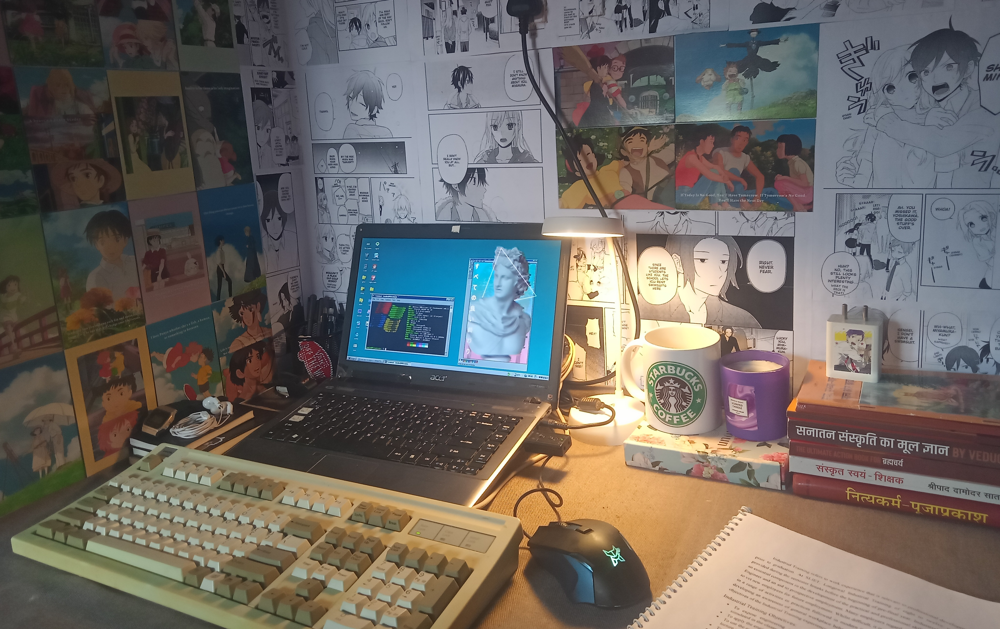

yeah, so this is the lil corner nook in my hostel room where most of the shit gets done. it’s basically a cemented slab attached to the corner of the wall, and while it might not be the most glamorous setup, it gets the job done. since the cement slab gets pretty cold in winter, i’ve thrown a blanket over the desk, and it’s been there since then.
the walls were a bit of an eyesore with all their marks and scratches, so i decided to spruce things up a bit. after giving them a good clean, i pasted some printed manga panels and ghibli anime postcards to cover the blemishes. ik it looks like a weeb nest but it is what it is.
this setup may be simple, but it’s cozy and functional.
—shvpnd. last updated - 16/09/2024